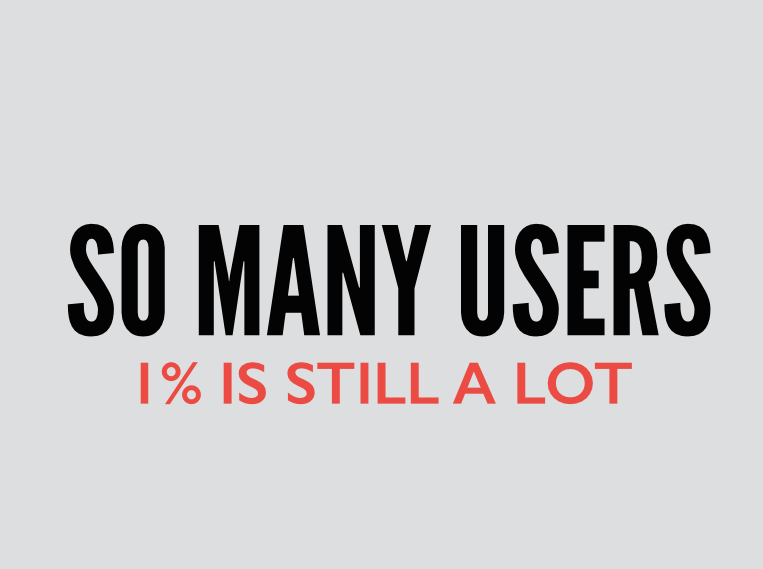
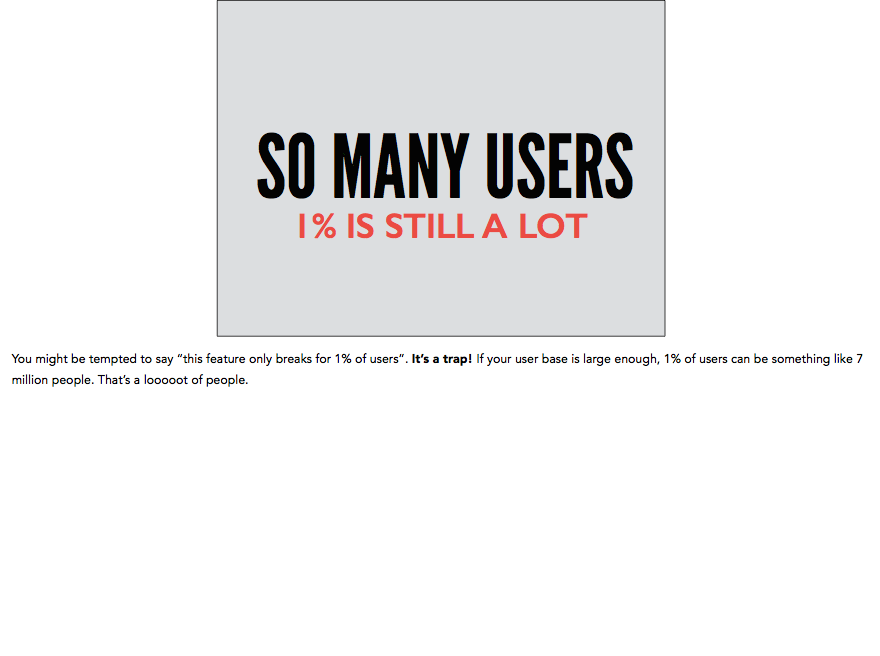
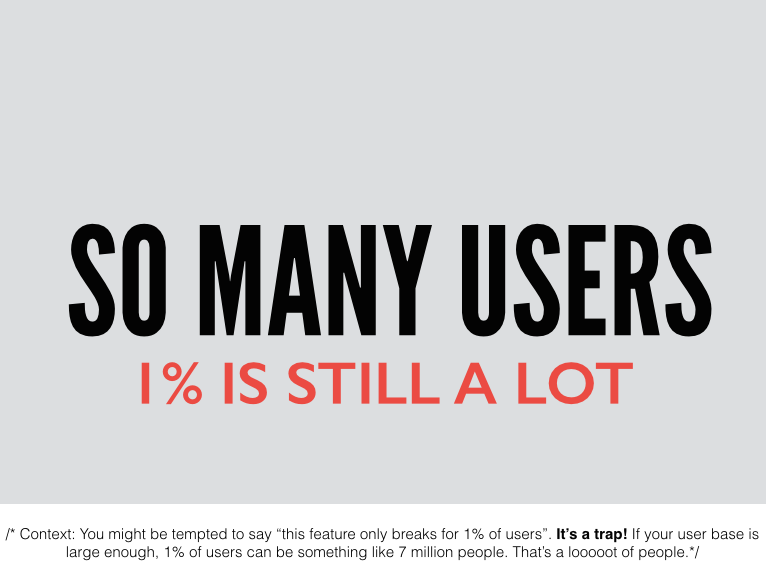
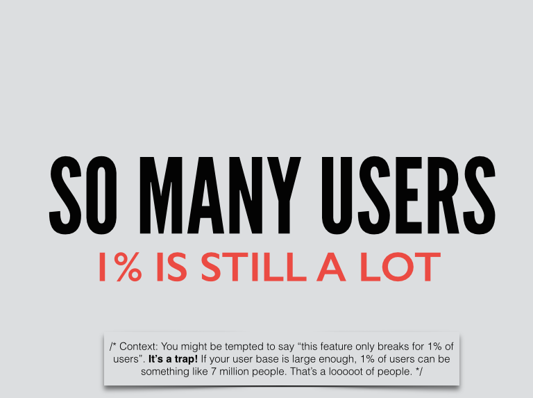
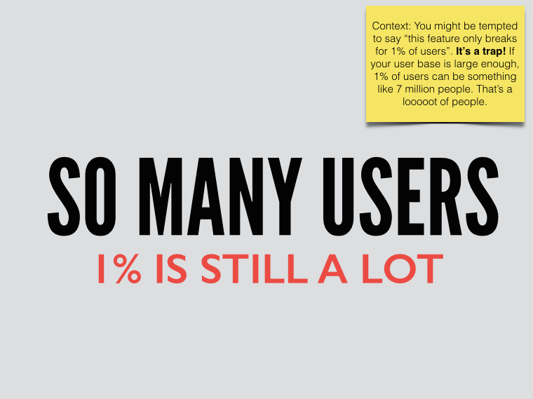

You’ve given a talk. It went great, and now everyone wants to see the slides. Hurray! Before we do anything else: give yourself a high-five. Giving a talk is hard, and you did it! This is something to be proud about.
Here’s the thing about slides, though: if you did them right, your slides should be pretty sparse. They’ll have very few words, probably in a big font, and some slides will only make sense if you’re talking along. This is extra sad if your presentation wasn’t recorded, or you didn’t record your voice: you’ll give your slides to the Internets and the Internets will be confused.
At this point, you could be tempted to just add a ton of content to your slides. Please don’t. Fewer words on a slide will force people to listen to you and not your slide. And that’s where the gems are.
Starting point
This is the slide I’ll be using as an example. It’s part of this presentation I just gave about keeping users happy. On its own, it’s a fine looking slide, but unfortunately, it lacks some context. 1% of what? Am I talking about 1% of users? Am I saying I have 1% of all the users? Noooobody knows.

Attempt the first: presenter notes
The first thing anyone will tell you (I know this because I asked Twitter, and this is the first thing it told me) is “export your speaker notes”. I’m making the crazy assumption here you have some presenter notes. If you’re anything like me, you probably have to clean them up a little because the world isn’t ready for how your brain actually works.
So you export your presentation with presenter notes out of Keynote and into a PDF, and the result is pretty much the worst:

Look at all that whitespace! Look how tiny your slide is! Look how that text spans the entire page but it’s in the tiniest font ever. LOOK AT IT. It’s a good time to stop looking at it when your eyes are bleeding. If you upload this presentation into something like Speakerdeck, it will look absolutely ridiculous. Are you angry yet?
Attempt the second: in-slide presenter notes.
Well, if Keynote can’t be civilized about it, you can take the presenter notes and just paste them at the bottom of the slide. If you set a white background, it even ends up looking like whatever Keynote is attempting, but failing, to achieve. Look! Free consulting for Keynote.

Attempt the next: fancy text
That was ok, but you might run into some problems if your slide background is white, in which case the text will look like it’s part of the slide, rather than a helpful note. So if the problem is that the text is unstyled, let’s style it and make it look like a note! This is the next thing I came up with:

It’s a little better, but I think this can still end up looking weird if your slide design isn’t a title-subtitle sort of slide. You might have to spend some time and figure out where to best place that text box.
Alternative: post-it notes
You can also go for a classic post-it, and slap it wherever you have space. The good news is: everyone knows what a post-it is and they won’t think you designed your slide like that. Whew.

Disclaimer
I don’t know which way is better; I think it will depend a lot on your slide deck design. I just wanted you to know that you don’t have to let Keynote terrorize you with its horribly exported presenter notes. There are alternatives.